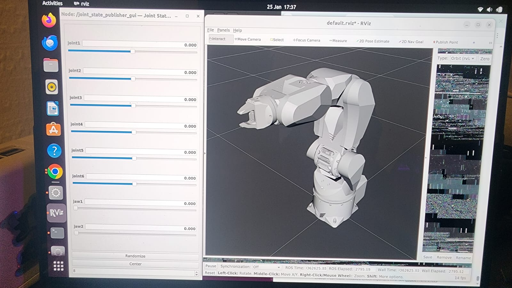
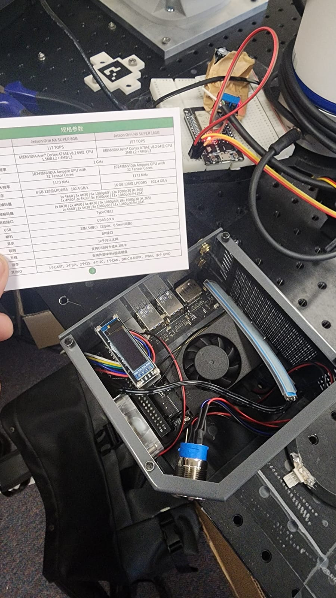
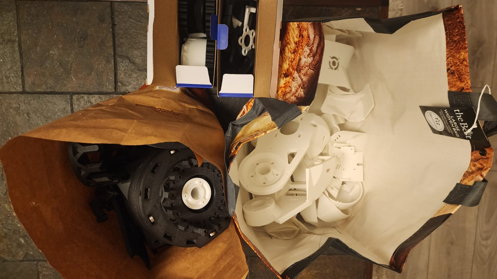

ROS2 + Gazebo: digital twin visualisation used to validate kinematics and motion planning workflows.
Immersive Calibration — 6-DOF Arm + VR Digital Twin
Master’s dissertation focused on improving accuracy of a low-cost 3D-printed 6-DOF robotic arm using simulation-driven calibration, embedded sensing, and vision-assisted feedback loops. The digital twin supports systematic calibration, repeatable testing, and measurable improvements in precision.

